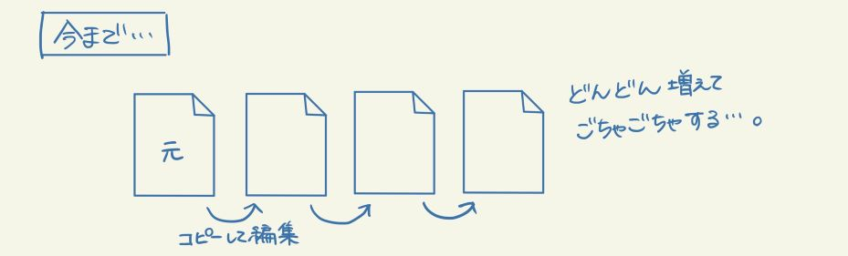
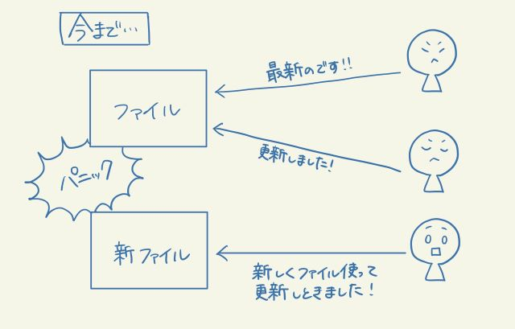
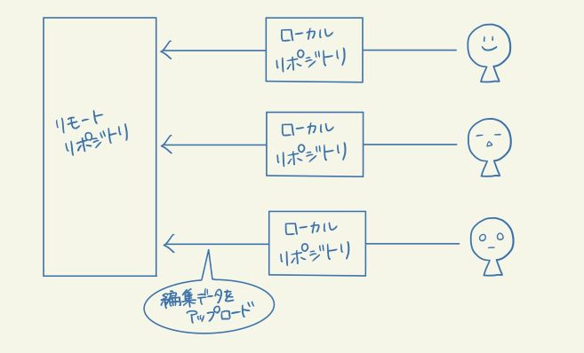

【このシステムの特徴】
- ファイルの変更履歴を残すことができる。
- 以前のバージョンに簡単に戻すことができる。
- 新しいファイルと古いファイルどちらも一括管理できる。
gitができる前まで、編集前のファイルをコピーして取っておく方法でしか、編集前のファイルを残しておく方法は無かった。
しかし、この方法だとファイル管理が大変である。

- 変更履歴を他人に共有できる。
- 複数人で修正した部分を一つに統合できる。
今までのチームで共有しているファイルの場合、複数人が同時に編集してしまい、どれが最新のデータなのかわからなかったりした。

しかしgitの場合、自分の手元のPCに全ての変更履歴が含まれたフォルダを複製することができる（ローカルリポジトリ）。
各々が複製したフォルダを自分のPCで編集し元フォルダ（リモートリポジトリ）にアップロードする形式となる。

※ローカルリポジトリ：自分のパソコン上に作られるもの。
※リモートリポジトリ：GitHubなどのweb上のサービスに作られるもの。
また、gitは他人が編集したデータを上書きしようとすると警告が出る用になっている。
これにより、以前のようにチームで同時に編集し先に編集した人のデータが消えてしまうといった失敗が起こらないようになっている。